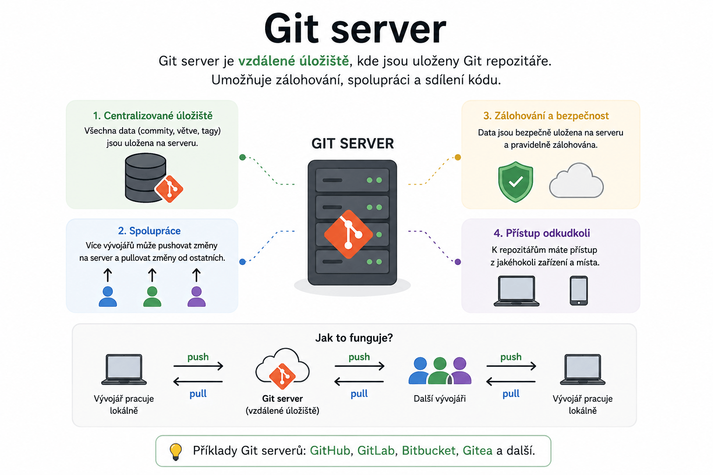

Git – Server s Gitem (např. Forgejo, Gitea, Github, Gitlab, atd.)
Praktické rady pro práci s Git repozitářem na serveru.

Správa remote URL
Přepnutí z HTTP na SSH
Změna remote URL na SSH
git remote set-url origin ssh://git@127.0.0.1:2222/dslavik29/Unity_UITK-MMA.git
Note
SSH přístup vyžaduje správně nakonfigurovaný SSH klíč na Gitea serveru (viz sekce SSH níže).
Přepnutí ze SSH na HTTP
Změna remote URL na HTTP
git remote set-url origin http://localhost:3010/dslavik29/Unity_UITK-MMA.git
Tip
HTTP je vhodné pro situace, kdy SSH není dostupné nebo při problémech s klíči.
Zobrazení aktuální URL
Kontrola remote URL
git remote -v
Hromadný mirror repozitářů na Gitea (SSH)
Přesune všechny lokální
.gitrepozitáře na SSH remote na Gitea serveru.
Bash skript pro hromadný mirror
for repo in *.git; do
name=${repo%.git}
echo "=== $name ==="
cd "$repo"
git remote remove origin 2>/dev/null
git remote add origin ssh://git@127.0.0.1:2222/dslavik29/$name.git
git push --mirror origin
cd ..
done
Important
Skript je nutné spustit v Bash prostředí (např. Git Bash nebo WSL).
Ujisti se, že máš SSH klíč přidán do svého účtu na Gitea serveru.
Warning
git push --mirror přepíše vzdálený repozitář kompletně – včetně všech větví a tagů.
Použij pouze při inicializaci nového remote nebo záměrném přepisu.
Git LFS s lokálním serverem
Git LFS (Large File Storage) umožňuje verzovat velké soubory mimo Git historii.
LFS a SSH – důležité omezení
Git LFS nepodporuje SSH pro přenos dat na vlastních serverech. I pokud je Git remote nastaven na SSH, LFS musí komunikovat přes HTTP.
Pokud narazíš na chyby při git push se soubory LFS, nastav LFS URL ručně:
git config lfs.url http://localhost:3020/dslavik29/Unity_MMA.git/info/lfs
Note
- Port LFS serveru (
3020) se může lišit od Git HTTP portu (3010). - Tato konfigurace je lokální pro daný repozitář – uloží se do
.git/config.
Ověření LFS konfigurace
git lfs env
Výstup zobrazí aktuální LFS endpoint a stav konfigurace.
SSH přístup ke Gitea
Nastavení SSH klíče pro Gitea
Vygeneruj SSH klíč (pokud ještě nemáš):
ssh-keygen -t rsa -b 4096 -C "tvuj@email.com"Zobraz veřejný klíč:
Windows:
type %userprofile%\.ssh\id_rsa.pubLinux/macOS:
cat ~/.ssh/id_rsa.pubPřidej klíč do Gitea:
- Otevři Gitea → Settings → SSH / GPG Keys → Add Key
Otestuj připojení:
ssh -T git@127.0.0.1 -p 2222